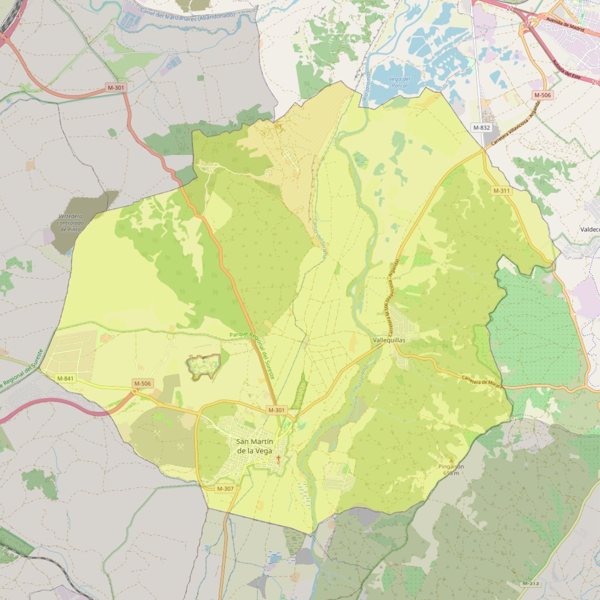

Natividad de Nuestra Señora

- Arciprestazgo
- Valdemoro
- Población
- San Martín de la Vega
- Dirección postal
- c/ La Iglesia, s/n
- Código postal
- 28330
- Extensión
- 105,02 km² (10.502 ha)
- Teléfono
- 918 945 041
- Correo electrónico
- parroquiasanmartindelavega@gmail.com